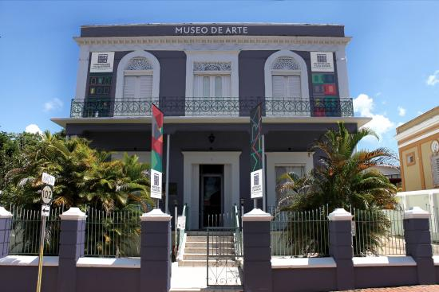
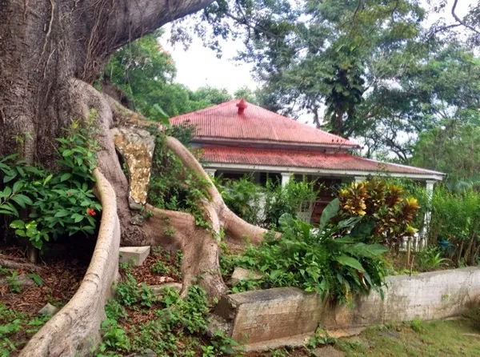
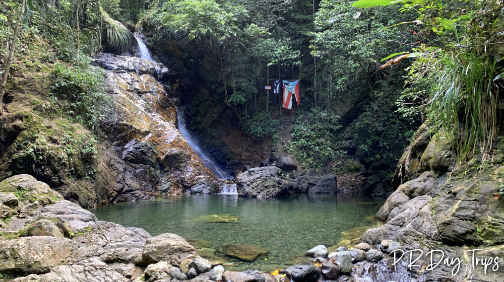

Museo Alfredo Ramírez de Arellano
Este museo contiene colecciones de arte y objetos religiosos, incluidos retablos antiguos y vestimentas usadas por el primer cardenal de Puerto Rico. También se exhiben artefactos taínos y exhibiciones cambiantes de artistas locales e internacionales.
Pueden visitar el Museo Alfredo Ramírez de Arellano en:
Museo de la Historia de San Germán (MHISA)

El Museo de la Historia de San Germán y El Museo de la Farmacia Domínguez albergan las mayores colecciones de historia y artefactos históricos de la ciudad de San Germán, al igual que de las farmacias o boticas del siglo XIX en Puerto Rico.
Pueden visitar el Museo de la Historia de San Germán (MHISA) en:
Ceiba de la Libertad
Cuando no se tocan, los árboles de Ceiba pueden crecer y extender sus raíces durante cientos de años. Un ejemplo muy grande y hermoso de eso está en San Germán, llamada la Ceiba de la Libertad. A este árbol centenario le quedan muchos años más para crecer, pero ya es una preciosidad! Puedes pararte entre sus enormes raíces y disfrutar de la sombra de sus ramas.
Pueden visitar la Ceiba de la Libertad en:
- Dirección: 3XM4+M9F, San Germán, 00683
Charco El Pilón
La cascada es agradable, tal vez de 30 pies de altura, y la piscina es cristalina y bonita. La piscina tiene solo unos 3 pies de profundidad, por lo que no parece que haya ningún lugar seguro para saltar/zambullirse en el agua.
Pueden visitar el Charco El Pilón en:
- Dirección: 42M5+HJ3, San Germán 00637